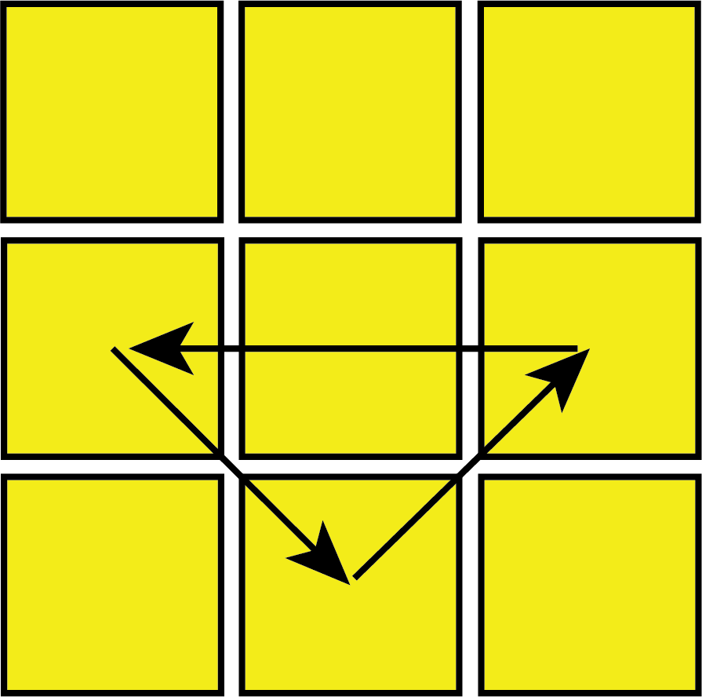
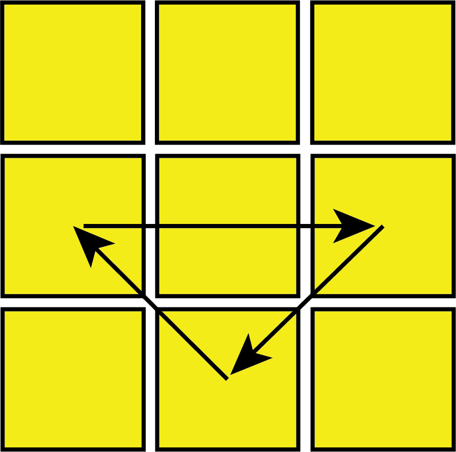

H-Perm: M2' U M2' U2 M2' U M2'|R2' U2 R' U2 R2' U2' R2' U2 R' U2 R2'
H-Perm: M2' U M2' U2 M2' U M2'|R2' U2 R' U2 R2' U2' R2' U2 R' U2 R2'
 Z-Perm: M2 U M2 U M U2 M2 U2 M U2|R U R' U R' U' R' U R U' R' U' R2 U R U2
Z-Perm: M2 U M2 U M U2 M2 U2 M U2|R U R' U R' U' R' U R U' R' U' R2 U R U2

The last step of the CFOP/Fridrich method is to permute the last layer (PLL). Full PLL solves the top face in 1 step, with 21 algorithms/different swaps.
Full PLL should be the easiest step to learn after beginner's method, as there are the least number of algorithms to memorize for this step. That being said, PLL should be the first part of this guide to learn, as anyone that is able to memorize beginner's method should be able to memorize PLL.
You should already know 6 PLL algorithms from 2-look PLL, and the rest of the algorithms are all variation of each other (as you can't do much without messing up the cube at this point) As this is likely the first step of CFOP that many memorize, I would recommend starting slow with learning 2-4 algorithms each day, and practicing learned algorithms every day on a solved cube.
Each of the possible PLL swaps have a name, describing the shape of the swap (i.e. T-Swap swaps corners and eddges in a 'T' shape) Not all cubes can quickly do M moves, so there will be an altnerative algorithm for algorithms that contain M moves. PLL will take a lot of practice outside of memorizing algorithms, as you will need to know which way the colours of the sides should be arranged. This page will list and name each of the different PLL algorithms:
This is also the 2nd part of 2-look PLL.
H-Perm: M2' U M2' U2 M2' U M2'|R2' U2 R' U2 R2' U2' R2' U2 R' U2 R2'
Z-Perm: M2 U M2 U M U2 M2 U2 M U2|R U R' U R' U' R' U R U' R' U' R2 U R U2
 U-Perm (a): R U' R U R U R U' R' U' R2  U-Perm (b): L' U L' U' L' U' L' U L U L2|R' U R' U' R' U' R' U R U R2 (depending on hand preference)
 A-Perm (a): x L2 D2 L' U' L D2 L' U L'
A-Perm (b): x' L2 D2 L U L' D2 L U' L
E-Perm: x' L' U L D' L' U' L D L' U' L D' L' U L D
A-Perm (a): x L2 D2 L' U' L D2 L' U L'
A-Perm (b): x' L2 D2 L U L' D2 L U' L
E-Perm: x' L' U L D' L' U' L D L' U' L D' L' U L D
While the G-perm looks complicated, you can tell which G-perm you have by pointing the 2 corner colours that match to the left.
 F-Perm: R' U' F' R U R' U' R' F R2 U' R' U' R U R' U R
F-Perm: R' U' F' R U R' U' R' F R2 U' R' U' R U R' U R
 T-Perm: R U R' U' R' F R2 U' R' U' R U R' F'
T-Perm: R U R' U' R' F R2 U' R' U' R U R' F'
 G-Perm (a): R2 U R' U R' U' R U' R2 U' D R' U R D'
G-Perm (a): R2 U R' U R' U' R U' R2 U' D R' U R D'
G-Perm (b): R' U' R U D' R2 U R' U R U' R U' R2 D
 G-Perm (c): R2 U' R U' R U R' U R2 U D' R U' R' D
G-Perm (c): R2 U' R U' R U R' U R2 U D' R U' R' D
 G-Perm (d): R U R' U' D R2 U' R U' R' U R' U R2 D'
G-Perm (d): R U R' U' D R2 U' R U' R' U R' U R2 D'
 J-Perm (a): x R2 F R F' R U2 r' U r U2
J-Perm (a): x R2 F R F' R U2 r' U r U2
 J-Perm (b): R U R' F' R U R' U' R' F R2 U' R'
J-Perm (b): R U R' F' R U R' U' R' F R2 U' R'
 R-Perm (a): R U' R' U' R U R D R' U' R D' R' U2 R'
R-Perm (a): R U' R' U' R U R D R' U' R D' R' U2 R'
 R-Perm (b): R2 F R U R U' R' F' R U2 R' U2 R
R-Perm (b): R2 F R U R U' R' F' R U2 R' U2 R
 N-Perm (a): R U R' U R U R' F' R U R' U' R' F R2 U' R' U2 R U' R'
N-Perm (a): R U R' U R U R' F' R U R' U' R' F R2 U' R' U2 R U' R'
 N-Perm (b): R' U R U' R' F' U' F R U R' F R' F' R U' R
N-Perm (b): R' U R U' R' F' U' F R U R' F R' F' R U' R
 V-Perm: R' U R' U' y R' F' R2 U' R' U R' F R F
V-Perm: R' U R' U' y R' F' R2 U' R' U R' F R F
Y-Perm: F R U' R' U' R U R' F' R U R' U' R' F R F'
I created the images along with everything else on this page myself, so everything on this webpage is definitely copyright free and free to use. I am adding this to the bottom of every page to show off the fixed position navigation bar on shorter pages, and it also makes the website look more professional.